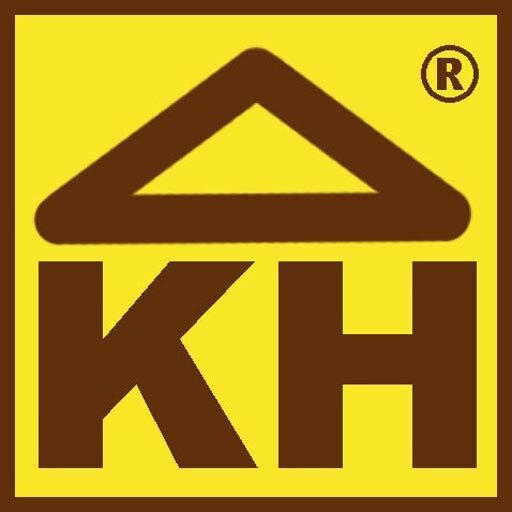
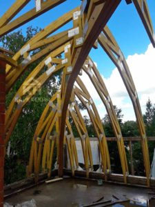
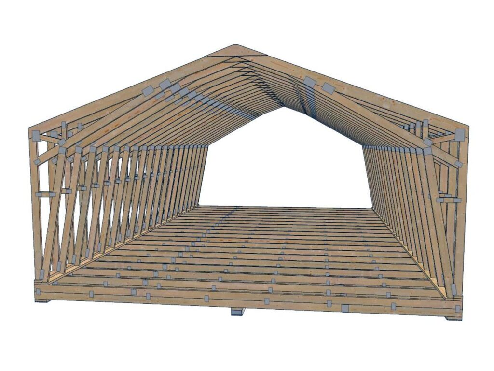

Фермы, балки, арки, рамы и опалубка на металлозубчатых пластинах. Проектируем в специализированном ПО, раскраиваем на станках с ЧПУ и собираем комплект на стенде перед отгрузкой — на площадке остаётся только смонтировать.
Шесть типов конструкций: двускатные, односкатные, мансардные, ножницы, сегментные и фронтонные.

Балки МДК (Posi-балки), фермы перекрытий, балки и стропила на МЗП. Без скрипов и прогибов.

Арочные конструкции для переходов, зимних садов, павильонов и коммерческих объектов.

Рамы и полурамы — каркас барнхаусов, зимних садов, гаражей и коммерческих зданий.

Оснастка для монолитных работ: точная геометрия, многократный оборот, ровная плоскость.

Готовый набор под конкретную крышу — от расчёта до маркированного комплекта на участке.

Каждый тип — собственная геометрия поясов и раскосов. Переключите вкладку, чтобы увидеть конструкцию.
Классическая двускатная ферма: два ската, горизонтальный нижний пояс, наклонные верхние пояса и треугольная решётка из стоек и раскосов. Оптимальны для жилых домов и любых зданий с двускатной кровлей.

Один скат — решение для пристроек, гаражей и зданий с несимметричной планировкой. Позволяют вписать дом в сложный рельеф.

Излом пояса: крутой нижний скат и пологий верхний. Такая геометрия даёт полезную площадь мансарды и работает на сложных объёмах.

Раскосы идут от нижнего пояса к верхнему «вразножку». Конструкция даёт открытое пространство без сжимающих стоек — для открытых интерьеров.

Верхний пояс изогнут по дуге. Применяются для арочных и сводчатых кровель, где нужна плавная геометрия и равномерное опирание.

Устанавливаются по торцам здания и закрывают проём слуховых и фронтонных окон. Часто изготавливаются с готовым раскроем под обшивку.

Балки и фермы перекрытий рассчитываются на прогиб и вибрацию — пол остаётся ровным и не «играет» под ногами.

Особая геометрия полки даёт большую несущую способность при малой высоте балки.

Для межэтажных и чердачных перекрытий. Соединение на пластинах исключает скрипы.

Когда под перекрытием нужна высота: пролёт перекрывается фермой с решёткой.
Помимо серийных ферм мы делаем уникальные конструкции: арки, рамы, полурамы и оснастку. Геометрия проектируется под объект и проверяется расчётом.




Пришлите пролёт и длину здания — вернёмся с расчётом, узлами и ориентировочной стоимостью.